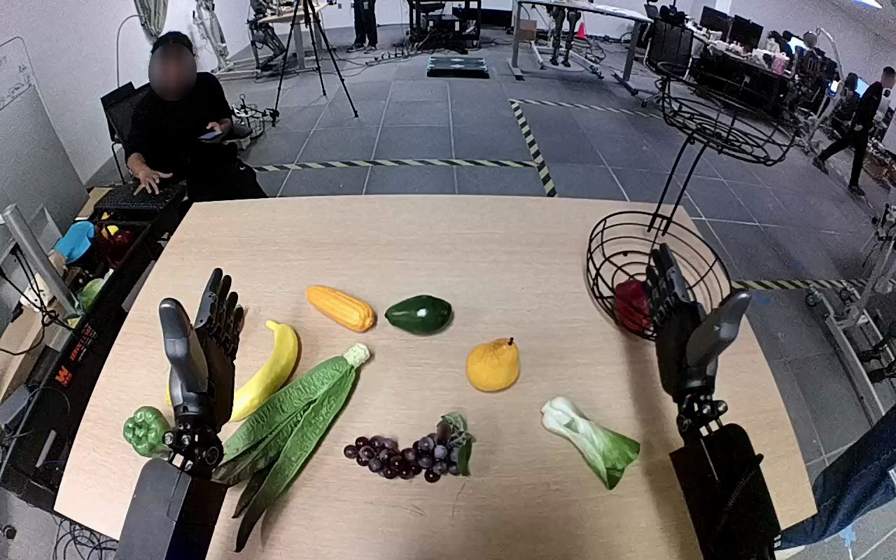

NVIDIA GR1 · 1
Video 1

Visual review action_review.json
{
"prompt_protocol": "humanoid_action_v1",
"prompt_provenance": "visually_authored_from_video_and_initial_frame",
"initial_scene": "Robot forward-looking view over a tan table, with two robot forearms extending from the lower camera edge. Small green-and-white bok choy lies on the robot-right side, below the lower tier of a black wire basket containing red fruit. Other produce is not manipulated.",
"reviewed_contact_sheets": [
"sheet_001.jpg"
],
"inspected_frame_stride": 2,
"inspected_sampled_frame_count": 60,
"inspection_coverage": {
"complete_source_sequence": true,
"sampled_frame_indices": [
0,
2,
4,
6,
8,
10,
12,
14,
16,
18,
20,
22,
24,
26,
28,
30,
32,
34,
36,
38,
40,
42,
44,
46,
48,
50,
52,
54,
56,
58,
60,
62,
64,
66,
68,
70,
72,
74,
76,
78,
80,
82,
84,
86,
88,
90,
92,
94,
96,
98,
100,
102,
104,
106,
108,
110,
112,
114,
116,
118
],
"initial_source_png_inspected_at_native_resolution": true,
"native_transition_and_terminal_frames": [
30,
60,
78,
94,
106,
108,
110,
112,
119
]
},
"evidence_frame_indices": [
0,
16,
30,
60,
72,
78,
94,
106,
108,
110,
112,
119
],
"anatomical_side_evidence": "The camera looks forward between the robot forearms, which extend away from the lower edge. The active arm emerges on the camera-right side; the initial open palms and mirrored thumb placement establish the forward-facing robot-relative convention, rather than a front-facing view with reversed sides. The active hand is robot-right, consistent with the original annotation. The robot torso and shoulder attachments are outside the camera crop.",
"arm_hand_roles": {
"right": "Sole manipulator: grasps and lifts bok choy, transports it to lower basket, releases it and retreats.",
"left": "Remains open near its initial position without supporting the object or basket."
},
"coordination": "Single-handed manipulation; no hand-to-hand transfer or human interaction.",
"observed_sequence": [
{
"start_frame": 0,
"end_frame": 14,
"description": "Right hand begins upright and open near the lower basket; left hand remains open."
},
{
"start_frame": 16,
"end_frame": 60,
"description": "Right hand turns palm down and reaches toward the small bok choy, opening around its sides."
},
{
"start_frame": 62,
"end_frame": 76,
"description": "Right fingers close around bok choy and lift it clear of the table."
},
{
"start_frame": 78,
"end_frame": 102,
"description": "Right hand carries the held bok choy upward and forward into the lower wire basket region beside the red fruit."
},
{
"start_frame": 104,
"end_frame": 108,
"description": "Right hand repositions the bok choy above the lower basket floor while still holding it."
},
{
"start_frame": 110,
"end_frame": 112,
"description": "Right hand opens and bok choy settles inside the lower basket beside the red fruit."
},
{
"start_frame": 114,
"end_frame": 119,
"description": "Empty right hand withdraws clear; bok choy remains visibly in the basket."
}
],
"outcome": "Successful visible release into the lower basket.",
"selected_execution_status": "completed_visible_success",
"terminal_state": "Bok choy rests inside the lower wire basket beside the red fruit; right hand is open and clear of the bok choy. Left hand remains unused.",
"uncertainties": [
"Robot torso and shoulders are outside the view; anatomical side is established from forward-looking paired-arm perspective and mirrored thumb orientation. Exact botanical identity comes from the annotation, supported by the visible green leaves and white stalk."
],
"annotation_discrepancies": [],
"video_id": "1",
"dataset": "NVIDIA_GR1_100",
"review_source_video": "NVIDIA_GR1_100/1/original/original.mp4",
"source_frame_count": 120,
"source_fps": 20.0,
"native_detail_frames": [
30,
60,
78,
94,
106,
108,
110,
112,
119
],
"world_model_prompt": "The robot uses its right hand to grasp the small green bok choy on the right side of the table and lift it clear of the surface. It carries the bok choy to the lower wire basket, lowers it beside the red fruit, and opens its hand to leave it resting inside. Keep the camera fixed; preserve robot geometry, physically valid joint motion, and normal gripper opening and closing.",
"original_task_instruction": "Use the right hand to pick up green bok choy from tan table right side to bottom level of wire basket.",
"selected_segment": {
"start_frame": 0,
"end_frame_exclusive": 120,
"reason": "Complete original single-task reference; no cropping or trimming requested."
},
"source_video_sha256": "ce5b22a55cdd148763a89d3e417bcc12ee1de07c2ebaba16084ee8e448a86903",
"review_completed_at": "2026-10-13T16:46:42.626149+00:00",
"dedicated_review_agent": "review_gr1_1"
}